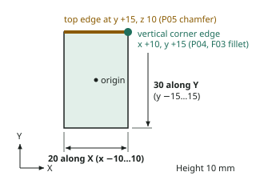
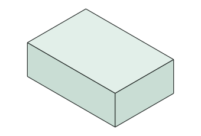
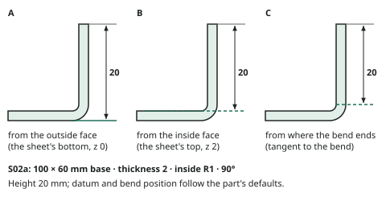
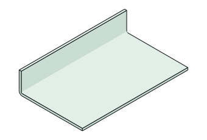
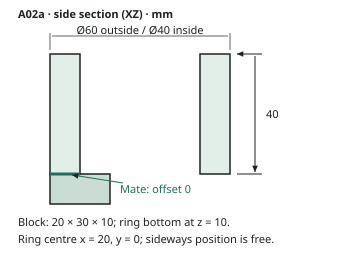
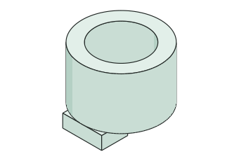
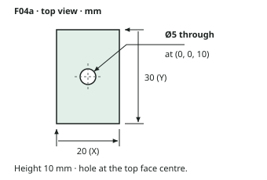
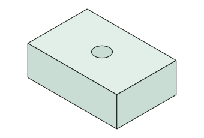

CAD Fixture Recipes
We're building open, clean-room readers for native CAD files (cadmpeg and SolidCraft, used by Dutchman). To test them we need small, known files made in the real apps: a block, a fillet, a flange, two parts with a mate, and a drawing of a part, each changing one thing at a time. Volunteers make them from short recipes, and every file helps.
We need test files, and we need you
Our readers only get better when someone with the real program makes the small files they're checked against. If you have Inventor, Fusion, SolidWorks, Creo, or CATIA, 15 minutes of your time moves the whole project forward.
Join our Discord Then type /volunteer in any channel. That's the whole sign-up.- Tell Dutchy which programs and years you have.
- We say hello and send your personal portal link (no account, no password).
- Follow the recipes one screen at a time and drop each file on its box. Partial sets are welcome.
The software we're looking for
Our readers cover twelve formats. Recipes are ready for these five, so they're where your files help most today:
Also wanted: tell us in Discord (or in your /volunteer sign-up) if you have one of these, and we'll add recipes for it:
The other three are covered already: FreeCAD we script ourselves (below), and STEP and IGES are open formats every program exports.
The recipes work in any year or release. Each year stores files a little differently, so a year nobody has covered yet is especially welcome; the portal shows which ones are wanted. Fusion updates every month, so several sets from different people are worth more than one.
FreeCAD is free and scriptable, so we make its sets ourselves from the same recipes: no FreeCAD files needed from volunteers. The sets for FreeCAD 0.21.2, 1.0.2, and 1.1.4 (parts, sheet metal, history recipes, and, from 1.0, assemblies) are free to download (CC0).
Use something not listed? Tell us in Discord which program and year.
Examples
A block, a flange, two parts with a mate, and a centred hole.
P01a
Sketch on XY: rectangle 20 (X) × 30 (Y) centred on the origin, dimensioned. Extrude 10 upward (+Z).


S02a
S01a + Flange on the top edge along X at y = 60, height 20, angle 90°, flange going up.


A02a
A01a + one Mate: P02a bottom face (z = 0) to P01a top face (z = 10), offset 0.


F04a
F01a + hole Ø5 through, at the top face centre (0, 0, 10).


How it works
Build a tiny part
Follow the recipe on screen. Example: P01a is a 20 × 30 mm rectangle pulled up 10 mm.
Make its twin
Open P01a, change one thing, and Save As P01b. Here, 10 mm becomes 12 mm.
Upload it
Each file is checked right away. If something's off, you'll see what and why. Then on to the next one.
Join in
- Get your personal link: join the Discord and type /volunteer. The link signs you in; there's no account or password.
- Pick your app and year. The portal walks you through each file, one per screen, with the recipe and a drawing. It takes about 15 to 45 minutes, depending on how far you go, and partial sets are welcome.
- Drop each file on its box. It's checked in seconds and you see the result. Questions go to a chat with the team.
- You choose whether your files join a public test collection (CC0) or stay private, for testing only.
Want to help us improve?
Send us a design of your own: one CAD file and, if you can, a STEP export of the same design. Direct-message it to Dutchy on the Discord, or, if you already have a portal link, use Your own files there. We compare what our readers get from your file with the STEP your program wrote.
Formats: Fusion (.f3d, .f3z), Inventor (.ipt, .iam), SolidWorks (.sldprt, .sldasm), CATIA V5 (.CATPart), Creo and NX (.prt, including numbered saves such as .prt.3), Creo View (.pvz), Rhino (.3dm), ACIS (.sat, .sab, .smt, .smb), FreeCAD (.FCStd), and IGES (.igs, .iges).
For the STEP export, pick AP242 if your program offers it, otherwise AP214; solid (B-rep), not mesh; the same units as the design; one file for an assembly. You choose whether your files stay private or join the public test collection (CC0).
The latest recipe booklet (PDF) is linked from the portal. Already helping and lost your link? Ask in Discord for a new one, or type /volunteer again.